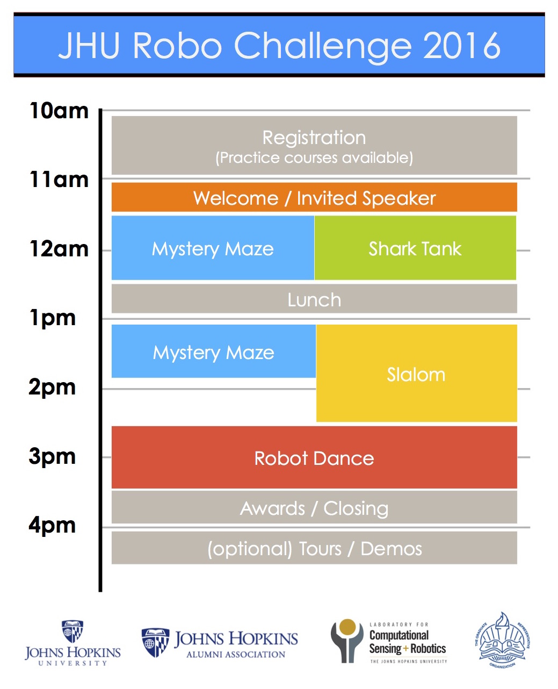
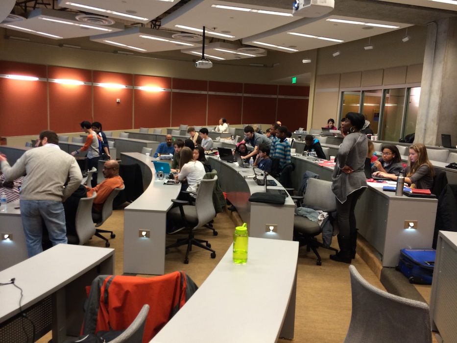
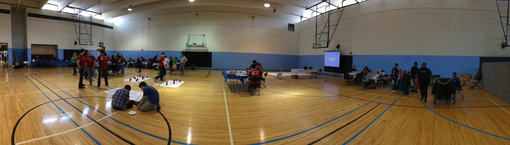
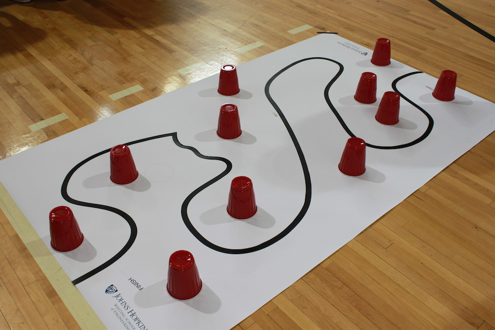
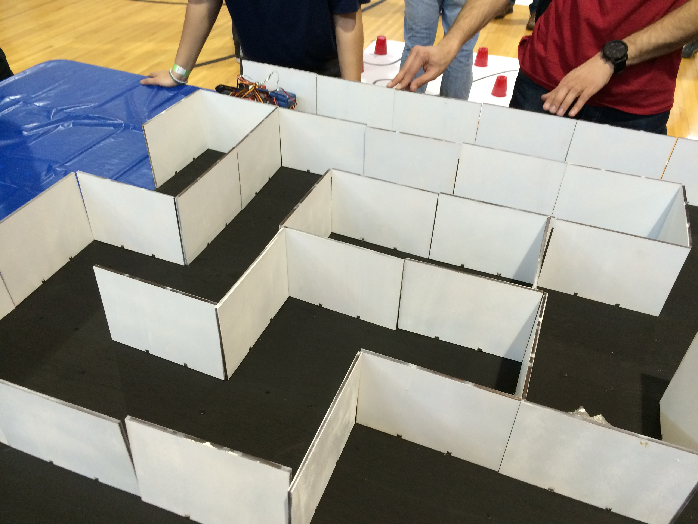
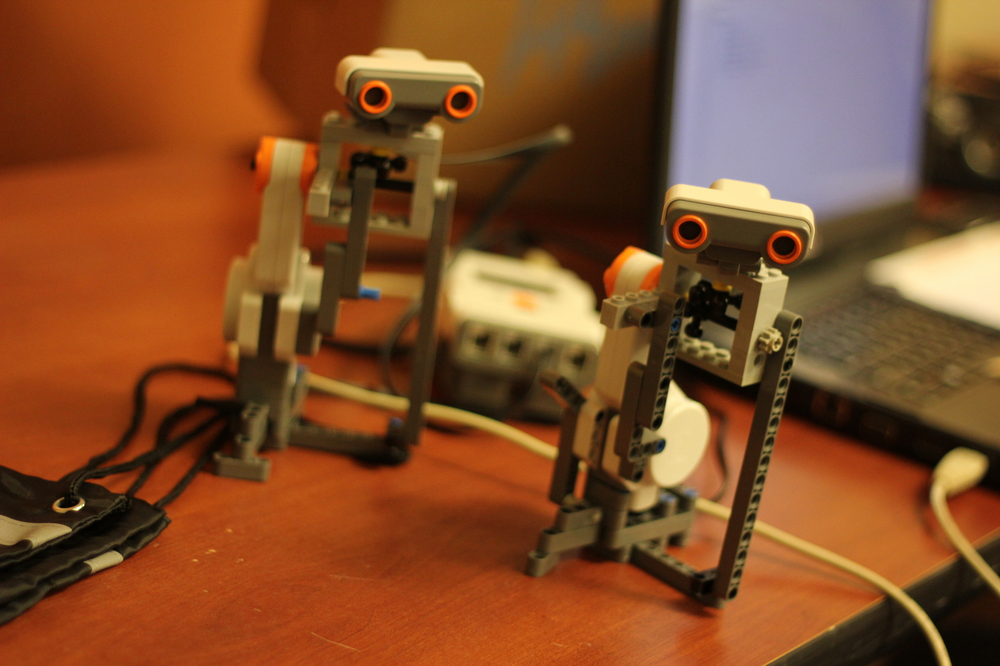
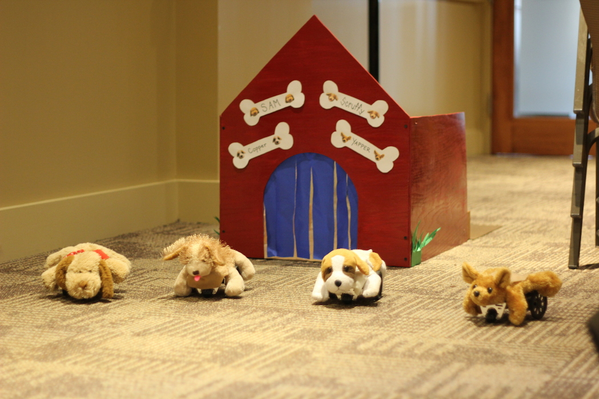

Overview
The purpose of the Johns Hopkins Robo Challenge is to complement classroom instruction by providing students with a unique opportunity to apply classroom skills and knowledge in a fun and competitive environment. The event brings students in teams to construct and program small robots that compete in several challenges.This competition is free and open to all middle and high school students.An outline of the events and an abreviated set of rules is listed below. See the official rules for more details. Note that there may be some minor changes between now and the training session. In addition we will upload scoring rubrics for each challenge and a list of parts to recreate each challenge so that teams can better prepare for the event.
For returning participants, welcome back! There have been some major changes to the 2016 edition of the JHU Robo Challenge. The larges changes are:
- Search and Destroy has been removed
- Mystery Maze will use a new board and has updated scoring
- Shark Tank has replaced the Mad Scientist event
- We have a parts list for each event for teams can practice at home
- The awards structure has been updated
- There will be an advanced training session
News
- March 25th: The rules were updated (above) to clarify questions we have recieved.
- March 25th: Here are build instructions for constructing a maze at home.
- March 25th: This is an example layout for the "easy" slalom.
- December 3rd: The 2016 rules have been added.
Events
|
Training Session: Feburary 6th (1am-5pm) Location: Hodson 211 (Homewood campus) Description: We will have one session that introduces students/teachers/parents to the BoEbot and Arduinobot. We will discuss how to assemble the robot, basic electronics, and how to program it using various sensors and motors. You should bring your robot and a laptop. |
 |
|
Help Session: March 19 (1pm-5pm) Location: Hackerman B17 (Homewood campus) Description: We will introduce selected advanced topics for programming the robots. The programming components of this session should be relevant regardless of which robot platform you are using (e.g. BoEBot, Lego NXT, etc.). In additional graduate students in robotics will be available to answer any questions and debug code. |
JHRC Competition: April 30th (10am-5pm)
Location: JHU Glass Pavillion (Homewood campus)
Register here by April 15th.
Location: JHU Glass Pavillion (Homewood campus)
Register here by April 15th.

Challenges
|
Challenge 1: Slithering Slalom Robots must follow a long, curvy black line on the ground. Obstacles will be placed parallel to the line, which the robot must avoid. |
 |
| Challenge 2: Mystery Maze Robots are placed in the Mystery Maze where they must autonomously navigate around corners and multi-way splits in attempts to reach the finish. Note: the maze will look different this year. We will also provide a list of parts so that teams can assemble a practice course at home. |
 |
| Challenge 3: Shark Tank Shark Tank is an open ended challenge where each team must design and prototype an innovative application for their robot. Some previous examples include creating a miniature prototype prosthetic arm using Lego Mindstorms, an autonomous goalie for a soccer game, and a robot that can draw letters. Each team should demonstrate a working model to a group of judges who will ask questions regarding design, implementation, and the target application. |
 |
| Challenge 4: So You Think Your Robot Can Dance Teams will program an original dance routine for their robot(s) that can last up to 2 minutes. Choreography can include a combination of spins, repeated sequences, and other creative movements. |
 |
General Rules
- There can be a maximum of 3 middle/high school students per team
- Only robots that comply with the “Acceptable Robots” may be used for the Slalom and Maze.
- Robot programs must be written entirely by the student teams (but may receive help from mentors). Extensive use of outside code is prohibited.
Acceptable Robots
This year, there is a specific size limit for each robot competing in the Slithering Slalom and Mystery Maze but not for the Shark Tank or Dance. For these challenges the maximum width and length of the robot is 7.5 inches by 7.5 inches . Within reason, there is no size limit for the other challenges. For most challenges the speed of the robot will be a factor in the score. You can use any sensor compatible with your robot kit.
Suggested robots:
- Arduino-based robot
- Sparki
- Lego Mindstorms
- BoE-Bot
We have a set of BoE-bots and Arduino-bots that can be loaned out for free (with $150 security deposit). If you would like a kit email us at jhu.robo.comp@gmail.com.
Previous Competitions
2015: [Results] [Webpage]Sponsors
Thank you to the sponsors who make this event possible!- The Laboratory for Computation Sensing and Robotics
- The Johns Hopkins Alumni Association
- The JHU Graduate Representative Organization